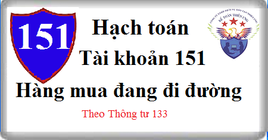

Hướng dẫn cách hạch toán Tài khoản 151 theo Thông tư 133, cách hạch toán hàng mua đang đi đường, thế nào là hàng mua đang đi đường, kết cấu và nội dung tài khoản 151
1. Nguyên tắc kế toán Tài khoản 151 - Hàng mua đang đi đường
a) Tài khoản này dùng để phản ánh trị giá của các loại hàng hóa, vật tư (nguyên liệu, vật liệu; công cụ, dụng cụ; hàng hóa) mua ngoài đã thuộc quyền sở hữu của doanh nghiệp nhưng đến cuối kỳ vẫn còn đang trên đường vận chuyển, ở bến cảng, bến bãi hoặc đã về đến doanh nghiệp nhưng đang chờ kiểm nhận nhập kho.
b) Hàng hóa, vật tư được coi là thuộc quyền sở hữu của doanh nghiệp nhưng chưa nhập kho, bao gồm:
- Hàng hóa, vật tư mua ngoài đã thanh toán tiền hoặc đã chấp nhận thanh toán nhưng còn để ở kho người bán, ở bến cảng, bến bãi hoặc đang trên đường vận chuyển;
- Hàng hóa, vật tư mua ngoài đã về đến doanh nghiệp nhưng đang chờ kiểm nghiệm, kiểm nhận nhập kho.
c) Kế toán hàng mua đang đi đường được ghi nhận trên Tài khoản 151 theo nguyên tắc giá gốc.
d) Hàng ngày, khi nhận được hóa đơn mua hàng nhưng hàng chưa về nhập kho, kế toán chưa ghi sổ mà tiến hành đối chiếu với hợp đồng kinh tế và lưu hóa đơn vào tập hồ sơ riêng: “Hàng mua đang đi đường”.
Trong kỳ, nếu hàng về nhập kho, kế toán căn cứ vào phiếu nhập kho và hóa đơn mua hàng ghi sổ trực tiếp vào các Tài khoản 152 “Nguyên liệu, vật liệu”, Tài khoản 153 “Công cụ, dụng cụ”, Tài khoản 156 “Hàng hóa”.
đ) Nếu cuối kỳ hàng vẫn chưa về thì căn cứ hóa đơn mua hàng ghi vào Tài khoản 151 “Hàng mua đang đi đường”. Kế toán phải mở chi tiết để theo dõi hàng mua đang đi đường theo từng chủng loại hàng hóa, vật tư, từng lô hàng, từng hợp đồng kinh tế.
2. Kết cấu và nội dung Tài khoản 151 - Hàng mua đang đi đường
Bên Nợ:
- Trị giá hàng hóa, vật tư đã mua đang đi đường;
- Kết chuyển trị giá thực tế của hàng hóa, vật tư mua đang đi đường cuối kỳ (trường hợp doanh nghiệp hạch toán hàng tồn kho theo phương pháp kiểm kê định kỳ).
Bên Có:
- Trị giá hàng hóa, vật tư đã mua đang đi đường đã về nhập kho hoặc đã chuyển giao thẳng cho khách hàng;
- Kết chuyển trị giá thực tế của hàng hóa, vật tư đã mua đang đi đường đầu kỳ (trường hợp doanh nghiệp hạch toán hàng tồn kho theo phương pháp kiểm kê định kỳ).
Số dư bên Nợ: Trị giá hàng hóa, vật tư đã mua nhưng còn đang đi đường (chưa về nhập kho doanh nghiệp).
3. Cách hạch toán Hàng mua đang đi đường Tài khoản 151
a) Trường hợp doanh nghiệp hạch toán hàng tồn kho theo phương pháp kê khai thường xuyên.
- Cuối kỳ kế toán, căn cứ vào hóa đơn mua hàng của các loại hàng mua chưa về nhập kho, nếu thuế GTGT đầu vào được khấu trừ, ghi:
Nợ TK 151 - Hàng mua đang đi đường (giá chưa có thuế GTGT)
Nợ TK 133 - Thuế GTGT được khấu trừ
Có Tài khoản 331 Phải trả người bán; hoặc
Có các Tài khoản 111, 112, 141,...
- Trường hợp thuế GTGT đầu vào không được khấu trừ thì giá trị hàng mua bao gồm cả thuế GTGT
- Sang tháng sau, khi hàng về nhập kho, căn cứ hóa đơn và phiếu nhập kho, ghi:
Nợ Tài khoản 152 Nguyên vật liệu
Nợ Tài khoản 153 Công cụ dụng cụ
Nợ Tài khoản 156 Hàng hóa
Có TK 151 - Hàng mua đang đi đường.
- Trường hợp sang tháng sau hàng hóa, vật tư đã mua đang đi đường không nhập kho mà giao thẳng cho khách hàng theo hợp đồng kinh tế tại phương tiện, tại kho người bán, tại bến cảng, bến bãi, hoặc gửi thẳng cho khách hàng, gửi bán đại lý, ký gửi, ghi:
Nợ TK 632 - Giá vốn hàng bán; hoặc
Nợ Tài khoản 157 Hàng gửi bán
Có TK 151 - Hàng mua đang đi đường.
Xem thêm: Hạch toán hàng bán thẳng không qua kho
- Trường hợp hàng mua đang đi đường bị hao hụt, mất mát phát hiện ngay khi phát sinh hoặc khi kiểm kê cuối kỳ, căn cứ vào biên bản về mất mát, hao hụt, kế toán phản ánh giá trị hàng tồn kho bị mất mát, hao hụt, ghi:
Nợ Tài khoản 1381 Tài sản thiếu chờ xử lý
Có TK 151 - Hàng mua đang đi đường.
b) Trường hợp doanh nghiệp hạch toán hàng tồn kho theo phương pháp kiểm kê định kỳ.
- Đầu kỳ, kế toán căn cứ trị giá thực tế hàng hoá, vật tư đang đi đường đã kết chuyển cuối kỳ trước kết chuyển trị giá thực tế của hàng hóa, vật tư đang đi đường đầu kỳ, ghi:
Nợ TK 611 - Mua hàng
Có TK 151 - Hàng mua đang đi đường.
- Cuối kỳ, kế toán căn cứ vào kết quả kiểm kê xác định trị giá thực tế của hàng hóa, vật tư đã mua nhưng chưa về nhập kho (còn đang đi đường cuối kỳ), ghi:
Nợ TK 151 - Hàng mua đang đi đường
Có TK 611 - Mua hàng.
------------------------------------
Kế toán Diệu Tâm xin chúc bạn thành công!
